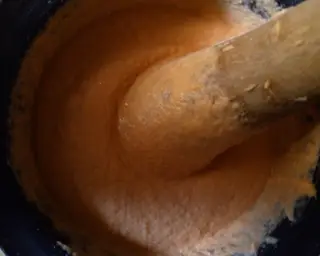
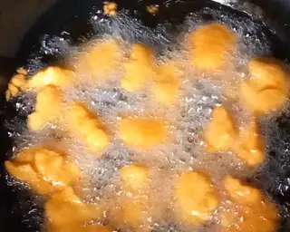
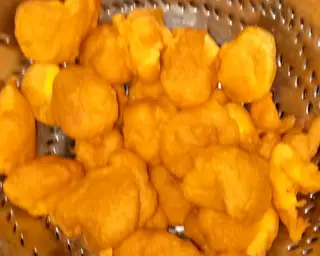

Kingwoman's Akara recipe
INGREDIENTS
- 5 cups of beans
- 1 handful pepper
- 1 medium sized onion
- 2 cubes of maggi
- 1 drizzle of salt
- 1/4 cup of water
- Pap(your prefered measurement)
- Sugar(to your taste)
- 3/4 bottle of vegetable oil
- Milk(to your tatste
- Wash and peel the beans
- Place in a blender and blend to paste with pepper; Make sure you add water while blending
- After blending mix properly(king woman used mortar to mix her own) add salt and maggi cubes then mix well
- Place a deep frying panon fire and add vegetable oil
- Wait for the oil to heat up and scoop the akara paste into the pan
- Let the akara balls float up and turn it. Make sure each side is golden brown
- Wait till it turns golden brown, remove and place in a sieve to drain oil
- Repeat process till all batter paste is finished
- For the pap, empty the pap into a bowl, add water little water and mix till all the particles are dossolved. Make sure the paste is not too watery
- Boil water at maximum boiling point and pour the hot water gradually into the paste,mix the pap paste as you pour the hot water until it thickens
- Add sugar and milk to your taste and mix well
- serve hot with Akara
STEPS TO COOK


